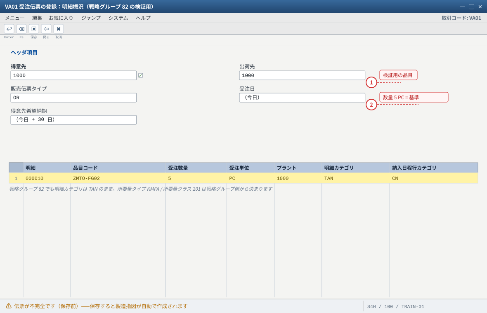
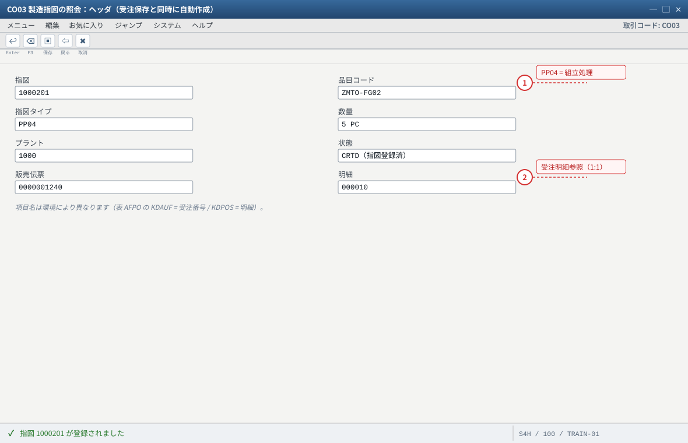
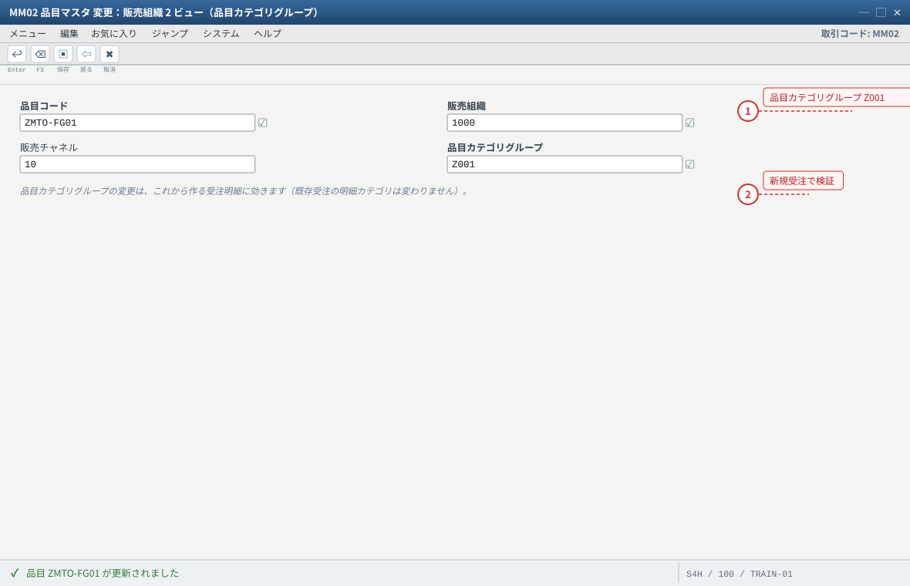
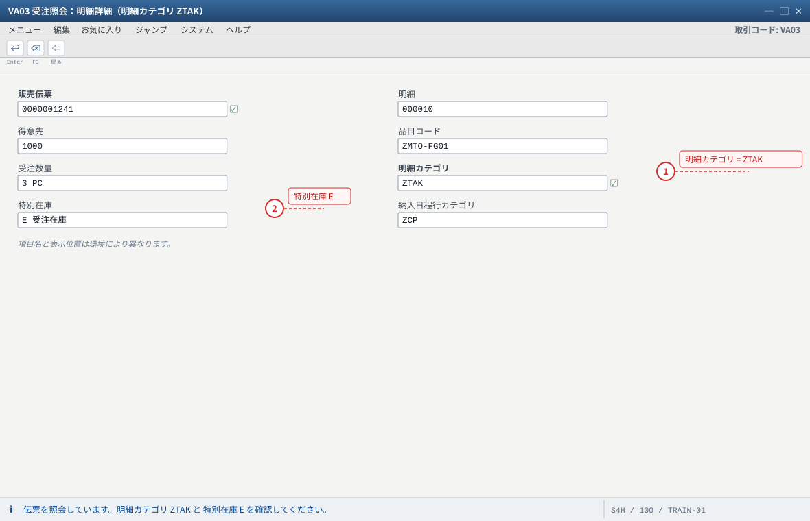
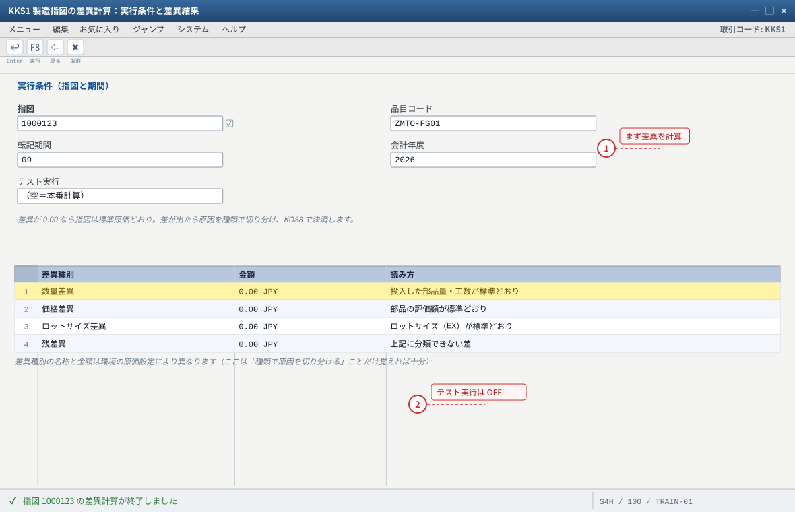
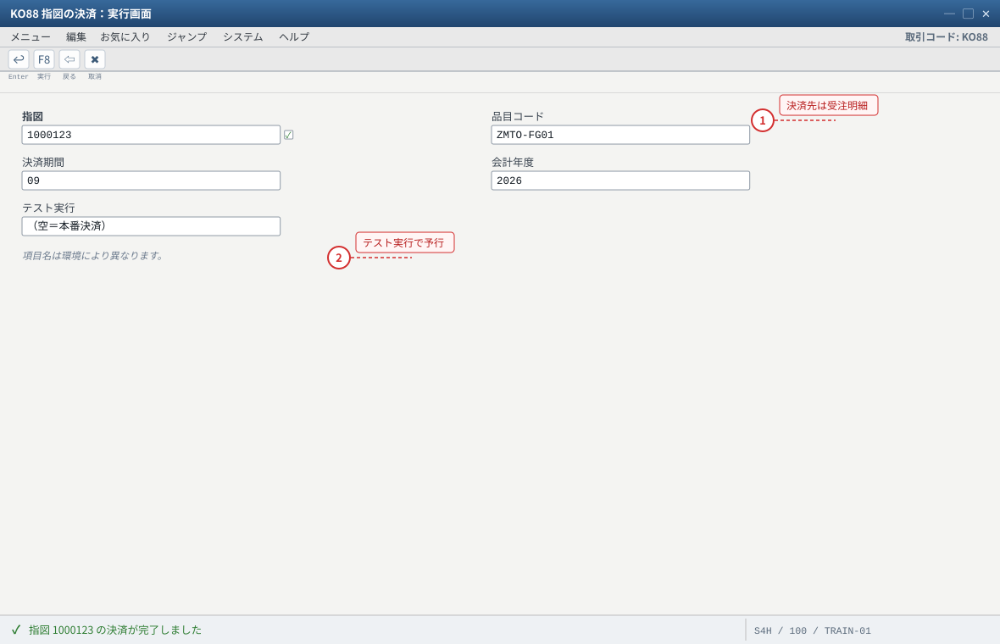
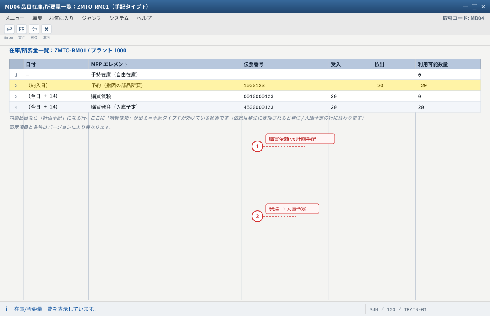
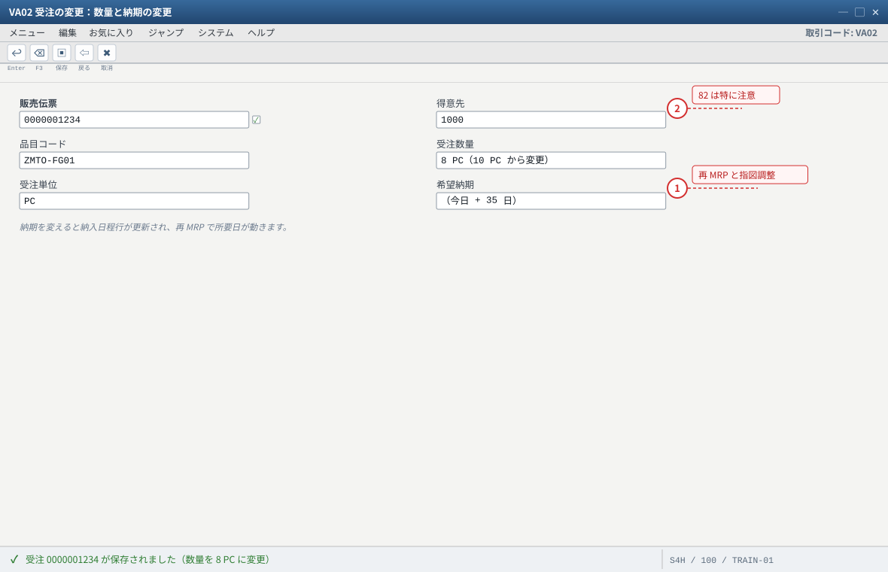
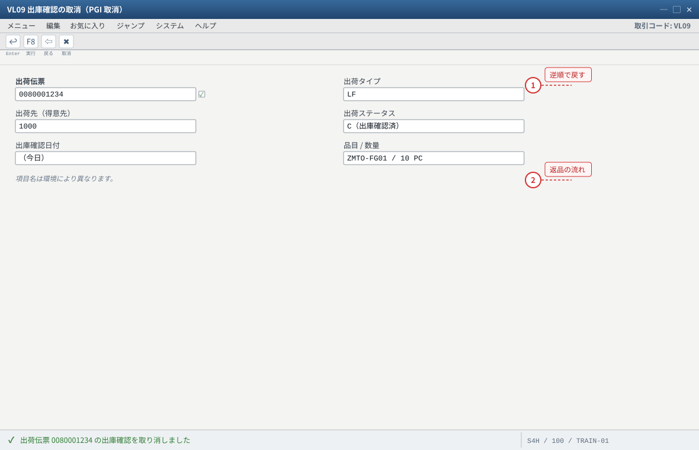

练习⑤ 発展課題与故障对应
.png 放进 assets/gui/ 后执行 python3 tools/swap_gui_images.py <site> --apply 即可一键替换。ZTAK（手把手验证配置成果）；
③ 受注在庫的差异与结算（CO 的最后一公里）；④ 部品改由采购供给；⑤ 取消/退回的处理。最后附一张 12 项故障对照表 与 MD04 读法表，现场排障时直接查。
预计 90 分钟起（可只挑其中 1〜2 个课题）。発展 1：組立処理（戦略グループ 82）— 受注保存と同時に製造指図
82（組立処理 with production order）在标准里已经配好：所要量タイプ KMFA / 所要量クラス 201 / 指図タイプ PP04，且是「静的手法（指図と受注 1:1）」（SAP Help Special Settings for Production Orders）。
与战略 20 的差别：不需要等 MRP 跑，受注保存那一刻就生成制造指図（受注 = 指令）。手顺
- 前提确认：
ZMTO-FG01有有效 BOM（CS03）、有作業手順（CA03）。組立処理必须有 BOM（否则会报错/无法展开）。 MM02→ZMTO-FG01→ MRP3 → 戦略グループ20→82（练习环境建议新开一个品目ZMTO-FG02做对照，避免污染主线数据）。- （确认）
MM03MRP4：個別/包括所要量 =1（個別所要量のみ）はそのまま。MRP1：MRPタイプPD、手配タイプE。 - 新建受注（
VA01：得意先 1000、品目ZMTO-FG02、数量 5 PC、纳期 +30 日）→ 保存。 - 看到消息里的指図番号（または「指図が登録されました」）：組立処理なら受注保存時点で製造指図が作られます。数量 5 = 受注数量 5（1:1）。
MD04を見る：戦略 20 のときのような「計画手配」を経由せず、受注在庫 + 製造指図 がいきなり現れます（受注在庫は入庫前なので 0）。- 確認差异：
MM02戻して20にすれば従来通り。两边的差异（受注保存 → 指図自動 vs MRP → 計画手配 → 変換）请用自己的话总结一句。
PP04 的调度参数（逆日程、基本日付調整など）由 SAP 标准设定保证，
若要换成别的指图类型，SAP Help 明确要求把「逆日程」与「基本日付の調整」设好；③ Public Cloud 里战略 82 由 スコープアイテム（BJE 等）交付，不必自己配。
- 1 82 の検証は別品目 ZMTO-FG02 で行うと、主线（ZMTO-FG01）のデータを汚さずに 20 と 82 を比較できます
- 2 数量 5 PC は、この後できあがる指図の数量と一致しているか（1:1）を見る基準になります
自システムでの確認：戦略グループ 82 は OPPJ / OPPS で確認します（所要量タイプ KMFA・所要量クラス 201・指図タイプ PP04）。BOM と作業手順は CS03 / CA03 で前提を確認します。

- 1 指図タイプが PP04 なのが組立処理の手がかり。標準の PP01（戦略 20）と違い、受注保存の瞬間にこの指図ができています
- 2 販売伝票 + 明細が入っている＝この指図はこの受注専用（1:1）。受注数量を変えたら指図の数量も合わせます
自システムでの確認：SE16N → AFPO で KDAUF / KDPOS（受注明細参照）を直接確認できます。MD04 では「計画手配」を経由せず、受注在庫 + 製造指図が直接並びます。
発展 2：自建明細カテゴリ ZTAK 的切换（验证 C5〜C9 的成果）
MM02→ZMTO-FG01→ 販売組織2 → 品目カテゴリグループ0001→Z001→ 保存。VA01新建受注（得意先 1000 / 品目ZMTO-FG01/ 数量 3 PC）→ 保存前确认明細行右侧：明細カテゴリ应自动变成ZTAK。- 此处应显示 特別在庫 = E（因为
ZTAK的 SOBKZ=E）。VA03→ 明細詳細で确认。 - 保存 →
MD04：所要量転送が成立し「得意先所要量 -3 PC」が出れば、C5〜C9 的四步配置全部生效。 - 对照实验：把品目カテゴリグループを
0001に戻して同様に受注 → 明細カテゴリがTANに戻ることを确认。 - 结论（要能答出来的问题）：「受注在庫 E 是靠明細カテゴリ（ZTAK）还是靠 MRP4+所要量クラス（战略 20）成立的？」 —— 两者都能让系统知道「这是受注库存货」，实务上常见做法是两个都设（明細カテゴリで明示，战略20/所要量クラスで数量与评价的规则）， 而只设其中之一也能跑起来（这也是现场容易吵起来的点——请以你系统的实测结果为准，并把结论写进要件定义）。

- 1 Z001 を入れると VOV4（OR + Z001）で ZTAK が決まるようになります。C6〜C8 の成果がここで使われます
- 2 変更前に作った受注には効かないので、検証は必ず新規受注で行います
自システムでの確認：VOV4 で OR + 品目カテゴリグループ Z001 → 明細カテゴリ ZTAK の割当を確認します。VOV7 の ZTAK には 特別在庫 E（SOBKZ）が必要です。

- 1 明細カテゴリが ZTAK に自動で決まった＝C6〜C8（Z001 / VOV7 / VOV4）が効いている証拠です
- 2 特別在庫 E が出ていれば、この明細は受注在庫で管理されます（ZTAK の SOBKZ = E）
自システムでの確認：対照実験として品目カテゴリグループを 0001 に戻し、同じ手順で受注を作ると明細カテゴリは TAN に戻ります。SE16N → VBAP（PSTYV = 明細カテゴリ / SOBKZ = 特別在庫）でも確認できます。
発展 3：差异与结算（受注在庫的「最后一公里」）
MTO 的制造指図是原价集约的对象：部品费 + 工时费（実際）vs 完成品受注在庫的入庫金额（標準）。差额就是差异。
| 步骤 | 事务码 | 做什么 | 看什么 |
|---|---|---|---|
| 1 | CO03 → 「原価分析」/ KKBC_ORD | 看指図的 計画/実際 原価（材料費・労務費…） | 実際原価 vs 入庫金额的差 |
| 2 | KKS1（製造指図の差異計算） | 计算差异（例：入力数量差异、価格差异、ロット差異） | 差異の種類と金額 |
| 3 | KO88（指図の決済）/ CO88（一括） | 把指图的实际成本结算到接收方（MTO 是受注明細/受注在庫） | 決済 → 差異が FI に流れる（FB03/KO88 のログ） |
| 4 | VF01 已达成的请求 + S_ALR 系 | 看受注的採算（受注在庫が売上原価になった後の粗利） | 粗利の正負と原因 |
KKS1/KO88 并看懂日志；③ 把结论讲给 FI/CO 同事。更深的请走 CO 模块专题。
- 1 差異計算は「実際原価 vs 入庫金額（標準）」の差を種類別に出す計算。まず KKS1、次に KO88（決済）
- 2 テスト実行を ON にすると FI に転記せず結果だけ確認できます（本番は OFF）
自システムでの確認：KKBC_ORD で指図の計画 / 実際原価の内訳を確認できます。差異があるときは種類（数量 / 価格 / ロットサイズ / 残）で原因を切り分けます。

- 1 決済で指図の実際原価が受注在庫（受注明細）へ流れ、差異は FI に転記されます（FB03 の会計伝票で確認）
- 2 テスト実行を ON にすると転記せずログだけ確認できます。ON で予行 → OFF で本番が安全です
自システムでの確認：決済ルールは CO02 →「決済ルール」で確認します（MTO では受注明細 / 受注在庫が受取側）。1 件ずつが KO88、一括は CO88 です。
発展 4：部品改由采购供给（MRP → 購買依頼 → 発注）
- 把
ZMTO-RM01的初期库存清掉（MIGO 262/MB1A 562或减少到低于需求），或直接把 MRP1 的手配タイプをF（外部調達）にし、購買グループ・購買発注タイプ（NB）を设定。 MD01N（またはMD02onZMTO-RM01）→ 購買依頼が生成される（計画手配ではなく購買依頼になる点が、内製品目との差）。ME59N（購買依頼 → 発注の一括変換）またはME21N（手動発注）で発注を作成 → 発注番号を记录。MIGO101（購買発注参照）で部品を入庫 → 在庫が回復します。MD04を確認：部品需求（予約）→ 購買依頼/発注 → 入庫予定 → 使用可能 の流れがつながっている。- 要点：完成品（受注生産）と部品（見込生産）で手配タイプを分けるのが一般的な設計。MTO の「按单」は完成品の話であり、部品は共通材として見込で持つ——この判断ができると設計相談で強い。

- 1 購買依頼が出ている＝MRP がこの部品を外部調達として手配した結果。内製（手配タイプ E）なら計画手配になります
- 2 発注に変換すると、この行は「購買発注（入庫予定）」に替わって入庫日が見えるようになります
自システムでの確認：MM02 の MRP1 / 2 で 手配タイプ F・購買グループ・購買発注タイプ NB を設定後、MD02（単品目）または MD01N を実行します。ME59N（一括変換）/ ME21N（手動）で発注、MIGO 101（購買発注参照）で入庫します。
発展 5：取消・変更・返品（练习必须会）
| やりたいこと | 事务码 | 手顺・注意 |
|---|---|---|
| 出庫確認（PGI）の取消 | VL09 | 出荷伝票を指定 → 执行。受注在庫が戻る。请求が既に作成済みなら先に VF11 で請求を取消（順序が逆だとエラー） |
| 請求の取消 | VF11 | 請求伝票 → 取消理由（例 01）→ 执行。会計伝票も冲销 |
| 入出庫伝票の取消 | MIGO（取消）/ MBST | 物料传票番号を指定 → 取消。その分の受注在庫・部品在庫が戻る |
| 実績（工程確認）の取消 | CO13 | 指図 + 工程 + 確認番号 → 取消。歩留/時間が戻る |
| 指図の削除/技術完了 | CO02 | 「削除フラグ」or「技術完了（TECO）」。入出庫が残っていると删除できない |
| 受注の変更（数量・納期） | VA02 | 保存后纳期行更新 → 再 MRP。战略 20 下计划手配/指図的调整需要另外做（数量増は新しい計画手配、減は余剰として表示） |
| 返品（売上戻し） | VA01（伝票タイプ RE）→ VL01N（返品出荷 LR）→ VF01（貸方伝票） | 返品在庫の扱い（非評価返品在庫等）は別設定。MTO の返品品は「その受注の特注品」なので、别的受注には使えない点に注意 |

- 1 数量を変えても指図・計画手配は自動では追随しません。保存後に再 MRP（MD02 / MD01N）と指図の数量調整が必要です
- 2 戦略 82 は受注と指図が 1:1 なので、数量変更は指図の数量にも影響します
自システムでの確認：変更後は MD04 で 得意先所要量 と 計画手配 / 指図がどう変わったかを確認します（数量増は新しい計画手配、減は余剰として表示）。

- 1 取消は後続伝票から逆順に：請求 VF11 → PGI VL09 → 入庫 MIGO 取消 → 実績 CO13 → 指図 CO02。順序を間違えるとエラーになります
- 2 返品は VA01（伝票タイプ RE）→ VL01N（返品出荷 LR）→ VF01（貸方伝票）。MTO の返品品は他の受注には使えません
自システムでの確認：PGI 取消後は MMBE で受注在庫 E が 0 → 10 PC に戻っていることを確認します。入出庫伝票の取消は MIGO（取消）/ MBST、実績は CO13、指図は CO02（削除フラグ / TECO）です。
6. 故障对照表（12 项：按症状查，不用背）
| # | 症状 | 第一嫌疑 | 確認手顺（コマンド順） |
|---|---|---|---|
| 1 | MD04 に需要が出ない | 所要量転送 / 納期行 / 明細カテゴリ | VA03 納入日程行カテゴリ → VOV5 の決定 → VOV6/SE16N: TVEP-BEDSD → VOV7 の納入日程行許可 |
| 2 | 需要は出るが計画手配が出ない | MRP 側の品目設定 | MM03 MRP1（PD / E / EX）→ MRP 対象プラント → MD02 で単品目実行 → 結果ログ |
| 3 | 補貨は出るが自由在庫用になる | 個別所要量が成立していない | MM03 MRP4（個別/包括所要量）→ OVZG の所要量クラス（個別在庫）→ VA03 の 特別在庫 E |
| 4 | 指図が受注在庫へ入庫されない（101 が自由在庫へ） | 指図に受注明細参照がない | CO03 ヘッダの受注明細参照 → (SE16N: AFPO-KDAUF/KDPOS) → 無ければ CO08 で作り直す |
| 5 | 出荷時に引当できない（在庫不足） | 受注在庫に入庫されていない | MMBE 特別在庫 E の数量 → 指図の入庫済数量（CO03）→ 保管場所 |
| 6 | 出荷明細が自由在庫を向いている | 受注明細の特別在庫 E が無い | #3 と同じ手顺（配置起因）→ 修正後は新規受注で再試行 |
| 7 | PGI が FI エラーで止まる | OBYC の勘定決定 | OBYC（BSX/GBB 等）→ FI 担当へ。エラーメッセージの「取引キー」を控える |
| 8 | 請求金額が 0 | 条件レコード / 計算手続 | VF03 の条件タブ → VK13 の条件レコード → VA03 明細の条件（価格決定の分析） |
| 9 | 請求対象が出てこない | 出荷が未 PGI / コピー制御 | VL03N の状態（C か）→ VTFL の出荷→請求コピー制御 |
| 10 | 受注在庫が評価されない（金額欄が空） | 所要量クラスの評価区分 / 会计视图 | OVZG の所要量クラス（評価）→ MM03 会計1（評価クラス・価格管理）→ MMBE の金額欄 |
| 11 | マイナス在庫になる | 過剰出庫 / 引当無視 | MMBE で対象（自由在庫 or 受注在庫）を特定 → MBST で取消 → 補給してやり直し |
| 12 | 取消したいのにエラーで戻せない | 後続伝票が存在 | 逆順に戻す：請求 VF11 → PGI VL09 → 入庫 MIGO取消 → 実績 CO13 → 指図削除 CO02 |
7. MD04 读法表（MTO 场景里最常出现的行）
| MD04 の行（日本語） | 英語/区別 | MTO での意味 |
|---|---|---|
| 受注在庫（得意先在庫 / 特別在庫 E） | Sales order stock | 这张受注专属的库存。入库 101 增加、出库确认 601 减少 |
| 得意先所要量 | Customer requirement | 受注产生的需求（带受注番号・明細）。没有这一行 = 所要量転送失败 |
| 計画手配 | Planned order | MRP 的补货提案。MTO 时其「在庫区分」= 受注在庫（E） |
| 製造指図 | Production order | 计划手配转换/组立处理自动生成的执行指令。ここから 101 入庫 |
| 購買依頼 / 購買発注 | Purchase req. / PO | 部品（外部調達）的补货 |
| 予約（構成品目の所要） | Reservation | 指图对部品的需求。261 出库的依据 |
| 入庫予定 / 出庫予定 | Receipt / Issue elements | 确定日期的出入库预定（含出荷伝票） |
| 計画独立所要量（PIR） | Planned independent req | 見込生産用。MTO（戦略20）では使わない（出てきたら設定ミスを疑う） |
| 手持在庫 / 利用可能数量 | Stock / ATP qty | 可用量。MTO では受注在庫が入って初めてプラスになる |
| 「階層変更」「他プラント」等の表示切替 | Display options | 「得意先別」「品目別」表示を切り替えると、いま誰の分を見ているかが分かる |
验收（完成基准）
- 発展 1〜5 のうち少なくとも 2 つを実機で実施し、結果を記録した。
- 組立処理（战略 82）で「受注保存時に指図が自動生成される」ことを確認（またはその環境に無い場合は理由を说明できる）。
KKS1→KO88を 1 回実行し、差異と決済のログを読んだ（または実行できない理由を说明できる）。- 故障对照表の 12 項のうち、実際に遭遇したものを自分の言葉で说明できる（根因 + 证据 T-code）。
- MD04 の主要行（受注在庫/得意先所要量/計画手配/製造指図/予約/利用可能）を图なしで说明できる。
- 取消の順序（請求 → PGI → 入庫 → 実績 → 指図）を言える。